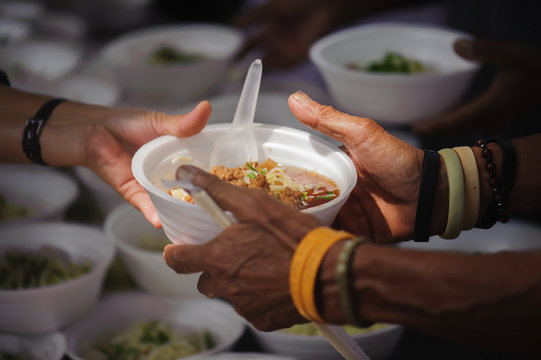
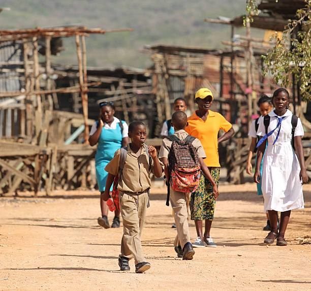

Nossos Projetos
🌱 Ações Sociais e Humanitárias
Na Jamaican’s Wish, ajudamos famílias carentes com alimentos, roupas e apoio após desastres. Trabalhamos com jovens em risco, oferecendo esportes e oficinas que criam novas oportunidades. Também cuidamos de mães solteiras e idosos, fortalecendo a união e o espírito comunitário.
👩🏫 Educação e Capacitação
Acreditamos na educação como base para um futuro melhor. Damos aulas de reforço, cursos práticos e oficinas de arte, música e dança. Assim, ajudamos jovens a descobrir talentos e crescer com confiança e conhecimento.
🌍 Meio Ambiente e Sustentabilidade

Cuidamos da nossa ilha com ações ambientais. Limpamos praias, reduzimos o uso de plástico e incentivamos a reciclagem. Também plantamos árvores, criamos hortas e trabalhamos pela preservação dos corais e da costa jamaicana.